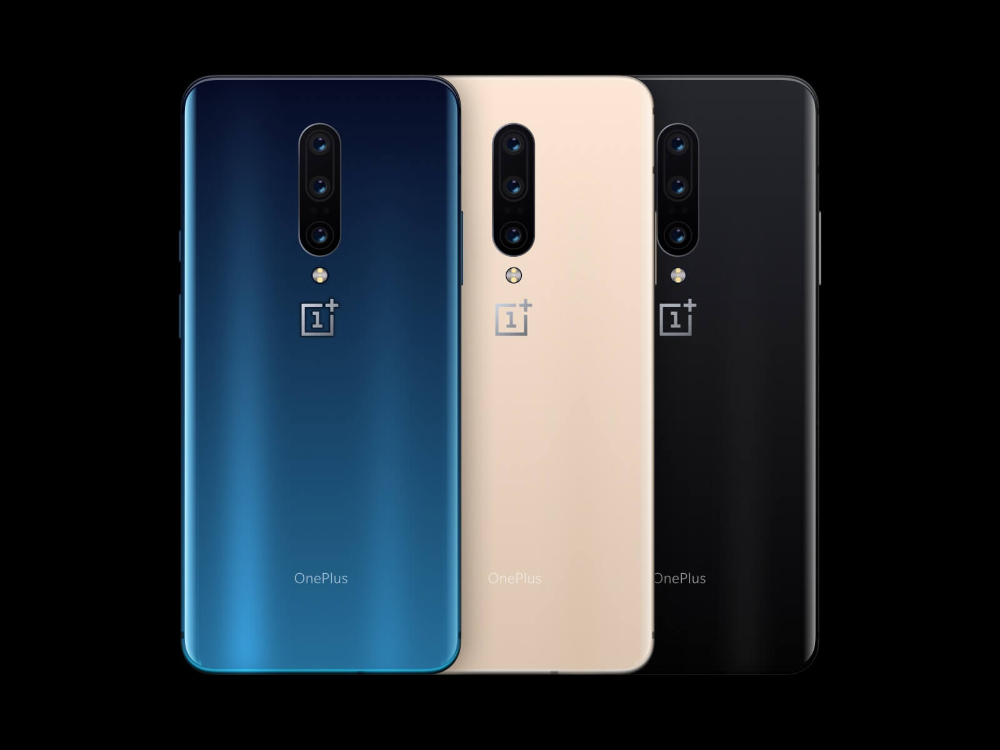

Screen
Fluid Display
With a responsive 90 Hz refresh rate and the latest HDR10+
technology, the OnePlus 7T’s Fluid Display is smooth, vivid, and incredibly immersive.
If it sounds too good to be true, just wait until you see it.

Nightscape |
With
48 MPMain CameraUp to 3.2GHzClock Speed |